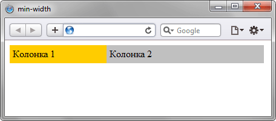

min-width
Устанавливает минимальную ширину элемента. Если окно браузера по ширине становится меньше заданной минимальной ширины элемента, то ширина элемента остается неизменной, а в окне появляется горизонтальная полоса прокрутки.
Значение ширины элемента будет вычисляться в зависимости от установленных значений свойств width, max-width и min-width. В табл. 1 показано, чем руководствуется браузер при совместном использовании указанных стилевых свойств.
| Значения свойств | Ширина | ||||
|---|---|---|---|---|---|
| min-width | < | width | < | max-width | width |
| min-width | > | width | > | max-width | min-width |
| min-width | > | width | < | max-width | min-width |
| min-width | < | width | width | ||
| min-width | > | width | min-width | ||
| min-width | > | max-width | min-width | ||
| min-width | < | max-width | max-width | ||
Данные из таблицы следует понимать следующим образом. Если значение ширины (width) меньше значения min-width, то ширина элемента принимается равной min-width.
Краткая информация
| Значение по умолчанию | 0 |
|---|---|
| Наследуется | Нет |
| Применяется | Ко всем элементам, кроме строчных и таблиц |
Синтаксис
min-width: <размер> | <проценты>Значения
В качестве значений принимаются пиксели (px), проценты (%) и другие единицы измерения, принятые в CSS. Отрицательные значения не допускаются.
Пример
<!DOCTYPE html>
<html>
<head>
<meta charset="utf-8">
<title>min-width</title>
<style>
#container {
min-width: 420px; /* Минимальная ширина контейнера */
}
#col1 {
background-color: #fc0; /* Цвет фона колонки */
padding: 5px; /* Поля вокруг текста */
float: left; /* Обтекание по правому краю */
width: 150px; /* Ширина левой колонки */
}
#col2 {
background-color: #c0c0c0; /* Цвет фона колонки */
padding: 5px; /* Поля вокруг текста */
width: 250px; /* Ширина правой колонки */
float: left; /* Обтекание по правому краю */
}
</style>
</head>
<body>
<div id="container">
<div id="col1">Колонка 1</div>
<div id="col2">Колонка 2</div>
</div>
</body>
</html>Результат данного примера показан на рис. 1.

Рис. 1. Результат использования min-width в браузере
Объектная модель
Объект.style.minWidth
Спецификация
| Спецификация | Статус |
|---|---|
| CSS Intrinsic & Extrinsic Sizing Module Level 3 | Рабочий проект |
| CSS Transitions | Рабочий проект |
| CSS Level 2 (Revision 1) | Рекомендация |
Браузеры
| Internet Explorer | Chrome | Opera | Safari | Firefox |
| 7 | 1 | 7 | 1 | 1 |
| Android | Firefox Mobile | Opera Mobile | Safari Mobile |
| 1 | 1 | 7 | 1 |